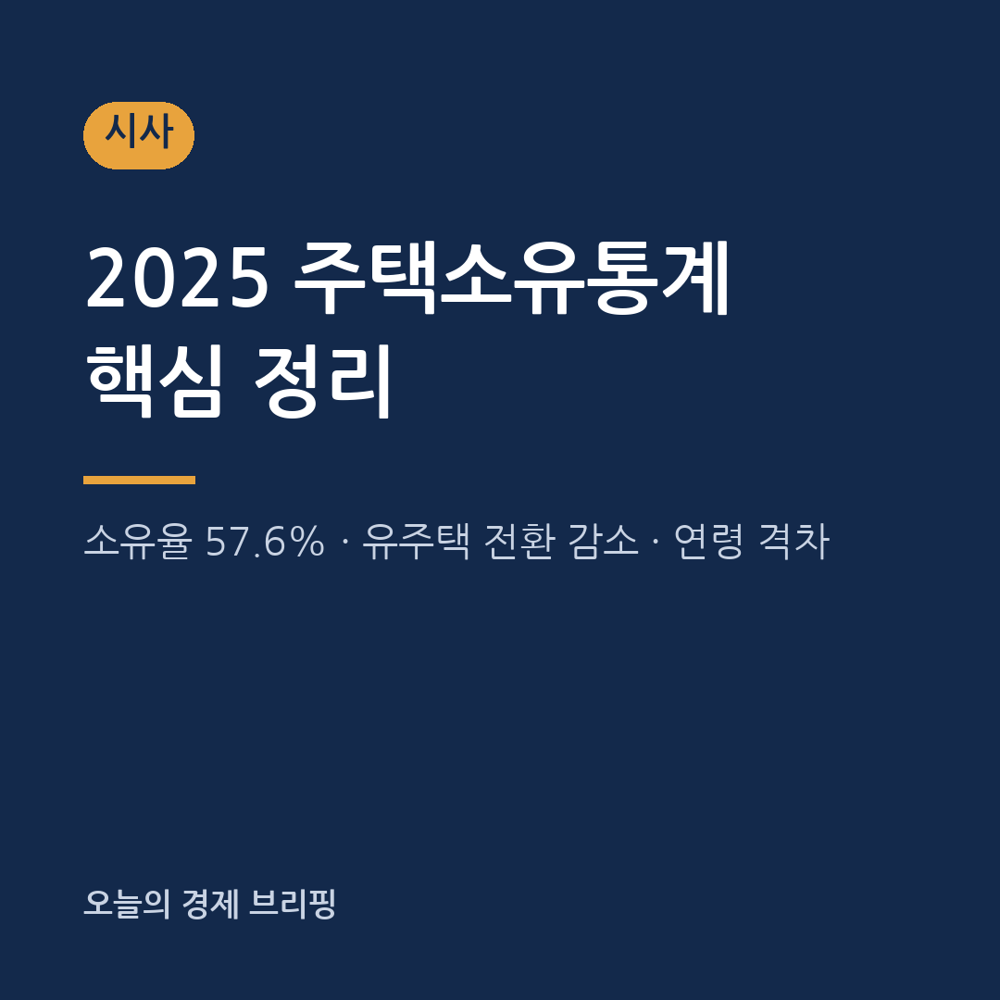
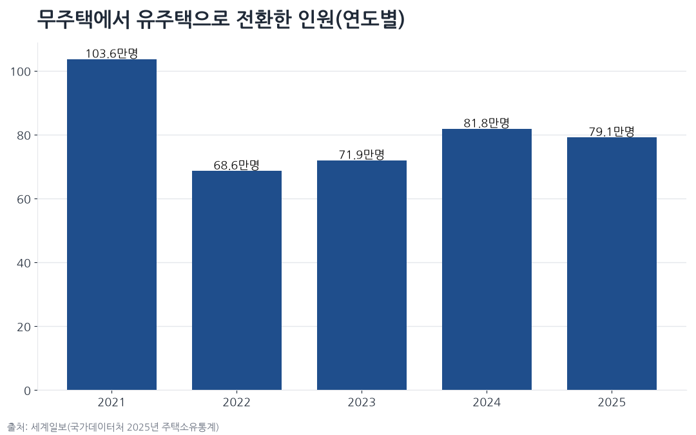

2026-11-20-1220-tistory 발행 키트 · 이 페이지는 검색에 노출되지 않습니다.
제목
카테고리
시사태그
본문 (그림·표 포함)
휴대폰 블로그 앱에서는 그림이 같이 붙지 않을 수 있어요. 그때는 [글자만 복사] 후 아래 이미지를 저장해 [그래프1]·[표1] 자리에 첨부하세요.

국가데이터처가 20일 발표한 2025년 주택소유통계의 핵심은 두 가지입니다. 주택을 소유한 가구의 비중은 57.6%로 통계 작성 이래 최고를 기록했고, 무주택자가 유주택자로 바뀐 규모는 3년 만에 감소했습니다.
▶ 배경: 주택소유통계는 무엇을 보여주나
주택소유통계(주택 소유 현황과 변동을 매년 집계하는 국가 통계)는 지난해 11월 기준으로 집계됩니다. 누가 얼마나 집을 갖고 있는지, 1년 사이 무주택과 유주택 사이를 오간 사람이 몇 명인지를 확인하는 자료입니다.
▶ 핵심 내용 1: 소유율과 주택 수
주택 소유율은 57.6%로 전년 56.9%보다 0.7%포인트 올랐습니다. 총 주택 2,018만 1,000호 가운데 개인이 가진 주택은 1,734만 호로 85.9%를 차지했습니다.
▶ 핵심 내용 2: 유주택 전환 규모의 변화
무주택자였다가 유주택자가 된 사람은 2025년 79만 1,000명으로, 전년의 81만 8,000명보다 2만 7,000명(3.3%) 줄었습니다. 최근 5년 추이는 아래 그래프와 같습니다.

반대로 유주택자였다가 무주택자가 된 사람은 35만 1,000명으로 전년 36만 5,000명에서 1만 4,000명 감소했습니다. 두 방향의 이동이 모두 줄어든 셈입니다.
▶ 핵심 내용 3: 연령대별 소유율 격차
70대가 71.2%로 가장 높고 60대 68.4%, 50대 65.9%, 80세 이상 65.6%, 40대 60.9% 순입니다. 30대는 36.1%, 30세 미만은 9.0%에 그쳤습니다. 보도에 따르면 30세 미만은 연령대 중 유일하게 소유율이 감소했습니다.
연령대별 주택 소유율 비교
| 연령대 | 주택 소유율 |
|---|---|
| 70대 | 71.2% |
| 60대 | 68.4% |
| 50대 | 65.9% |
| 80세 이상 | 65.6% |
| 40대 | 60.9% |
| 30대 | 36.1% |
| 30세 미만 | 9.0% |
출처: 세계일보(국가데이터처 2025년 주택소유통계)
▶ 영향: 대출 부담도 함께 커지는 흐름
같은 날 공개된 3분기 자료에서는 차주 한 명이 새로 받은 주택담보대출 평균 금액이 2억 1,451만 원으로 나타났습니다. 이는 622만 원 늘어난 수치이며, 주택 가격 상승과 집단대출 증가가 배경으로 전해졌습니다.
소유율이 높아지는 동안 신규 진입 규모가 줄고 대출 평균액이 커진 점은 실수요자의 자금 계획에 영향을 줍니다. 다만 이 자료만으로 집값 방향을 판단할 수는 없습니다.
▶ 확인할 점
확인할 점 정리
| 무엇을 | 어디서 확인 |
|---|---|
| 지역별 소유 현황 | 국가데이터처 주택소유통계 원자료 |
| 다주택자 규모 | 국가데이터처 주택소유통계 원자료 |
| 내 대출 조건 | 이용 중인 금융기관 상담 |
출처: 세계일보, 연합뉴스 보도 내용 기준 정리
통계의 지역별 분포와 다주택자 규모는 이번에 확인한 기사에 담기지 않았습니다. 해당 수치는 국가데이터처 원자료에서 별도로 확인해야 합니다.
▶ 정리
1. 주택 소유율은 57.6%로 통계 작성 이래 가장 높았습니다.
2. 무주택에서 유주택으로의 전환은 79만 1,000명으로 3년 만에 줄었습니다.
3. 연령대별로 70대 71.2%와 30세 미만 9.0%의 격차가 크며, 신규 주택담보대출 평균은 2억 1,451만 원입니다.
이미지 (개별 복사·저장)
출처 (본문 맨 아래에 붙여넣기 권장)
- 세계일보, 주택 소유율 역대 최고지만, 무주택→유주택 전환은 3년 만에 감소세, https://www.segye.com/newsView/20261120507179 - 연합뉴스, 3분기 신규 주담대 평균 2억1천451만원…622만원 늘어, https://www.yna.co.kr/view/AKR20261120079200002